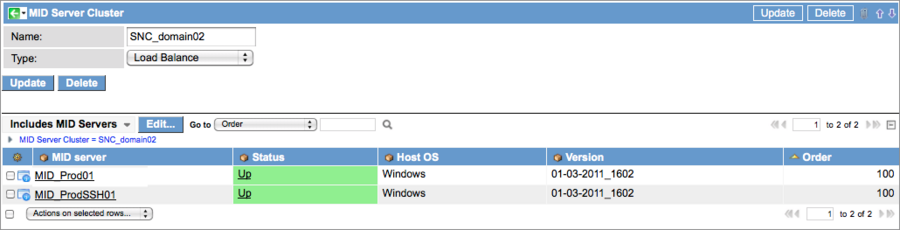

MID Server Clusters
| |
Note: This article applies to Fuji. For more current information, see MID Server Cluster Configuration at http://docs.servicenow.com
The ServiceNow Wiki is no longer being updated. Please refer to http://docs.servicenow.com for the latest product documentation. |
Contents
1 Overview
MID Server clusters enable multiple MID Servers with the appropriate capabilities to be grouped together for load balancing and fail-over protection. A MID Server can be added to both a load balancing cluster and a fail-over cluster for more flexibility.
MID Server clusters are available for Discovery and for use with products integrating with the ServiceNow platform.
For performance and reliability reasons, these data sources should not be used with MID Server clusters:
- LDAP
- Export sets
- JDBC data sources
These external data sources should only be used with dedicated MID Servers.
2 MID Server Cluster Event
The following event is triggered when the platform cannot find a MID Server with the appropriate capabilities to replace a MID Server in a fail-over cluster. Use this event to create an email to notify appropriate users that the cluster has failed.
| Event | Table | Description | Business Rule |
| mid_server.cluster.down | MID Server Cluster [ecc_agent_cluster] | A MID server cluster has failed | MID Server Cluster Management |
3 How Clusters Work
MID Servers in clusters must be able to connect to all the devices with which they are expected to communicate. Make sure all the MID Servers are added to any Access Control List (ACL) in use. MID Server clusters are managed by a business rule called MID Server Cluster Management, which checks to see if the MID Server assigned to a job in the ECC Queue belongs to a cluster.
3.1 Load Balancing
If the cluster business rule determines that a MID Server is part of a load balancing cluster, the application using the MID Server automatically balances the work between the MID Servers in that cluster. It is best practice to put MID Servers with the same capabilities in a load balancing cluster.
3.2 Fail-Over Protection
MID Servers in a fail-over cluster each have a configured order that the platform uses to determine which MID Server to use next in case of failure. MID Servers in a fail-over cluster work independently and do not load balance with other MID Servers in that cluster (although they might also be members of load balancing clusters). When a MID Server fails, the MID Server Cluster Management business rule selects the highest available MID Server in the order to take over the work. The selected MID Server checks the ECC Queue and starts with jobs that are either Processing or Ready. It is best practice to configure a fail-over MID Server with at least the same capabilities as the MID Server it is intended to relieve.
3.3 Combining Clusters
A MID Server can be added to both types of clusters at the same time. This diagram shows a scenario in which a MID Server from a load balancing cluster (MID Server D) is also present in a failover cluster. If MID Server D fails, MID Server E in the failover cluster is available to the load balancing cluster to perform the tasks previously assigned to MID Server D.
{kind=link}
4 Configuring a Cluster
- Navigate to MID Server > Clusters.
- Click New.
- Name the cluster and select the cluster type: Failover or Load Balance.
- Right click in the header bar and select Save from the context menu.
- Click Edit in the Includes MID Servers Related List.
- Select appropriate MID Servers for this cluster from the slushbucket.
- Note: All MID Servers in a cluster must have capabilities defined. Ensure that each MID Server has the appropriate capabilities for the job. A MID Server in a failover cluster must have the same capabilities (or expanded capabilities) as the MID Server it is expected to replace.
- 
{kind=link}
Contents > Deliver > IT Operations Management > Discovery
Contents > Deliver > IT Operations Management > Orchestration > MID Server
Contents > Integrate